Unearthed Arcana
COMBAT FACING
This variant makes combat more complex, but it opens up new strategic options for PCs and monsters alike. It�s a good choice if your group relishes the tactical complexity of d20 combat and doesn�t mind spending a lot of time duking it out with the bad guys. It won�t change the power level of your game.
This variant supersedes the standard rules for flanking and creates new conditions for the rogue�s use of the sneak attack ability.
FACING DIRECTION
All PCs and most monsters have a facing: the direction to the adjacent square the character or creature is pointing toward. This means that a Medium creature standing in a given square has eight possible facings. The three squares a Small or Medium character is pointing toward are its front area. The three squares behind it are its rear area. The squares to its left and right are its flanks. Larger characters have more squares to deal with, but they still face toward one of eight directions. Their front areas remain the squares in front of them (including those on the front corners); their rear areas remain the squares behind them (including those on the rear corners); and their flanks remain the squares directly to their sides.For some miniatures, it�s obvious which direction they�re facing; their faces are pointed in a particular direction, and they�re brandishing a weapon in that direction too. But some miniatures look one way and point their weapons another, or it�s otherwise unclear which way they�re facing. To keep things clear at the gaming table, it�s easiest if you mark the front of each miniature with a small dot or arrow on the base. That way everyone knows which way the character represented by the miniature is facing.
Some creatures simply have no facing. See Faceless Creatures, below.
| 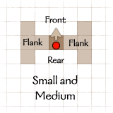 | 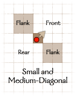 | 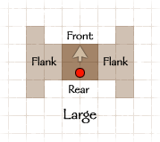 |
| 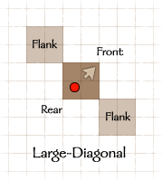 | 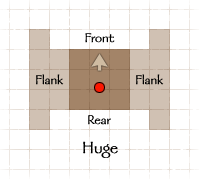 | 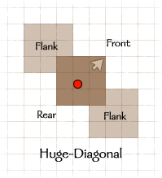 |
| 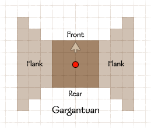 | 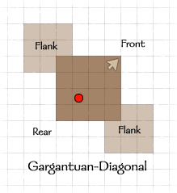 | 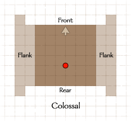 |
| 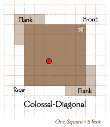 |
FACING AND MOVEMENT
Facing has some significant effects on movement.Changing Facing: As you move, you can freely change your facing, rotating your miniature before you step into each new square. In addition, you can change facing at the end of your move. These rules do not apply if your movement is limited to a 5-foot step; see below.
If you do not move during your turn, or if your movement is limited to a 5-foot step, you may change facing once, at any point during your turn, as a free action. You can turn to face any direction you like, but you cannot change facing more than once. (You can also change facing as a move action, however, if you aren�t using your move action to do something else.)
Normal Movement: You can move into any square in your front area at the normal movement cost. As you move, you may change your facing as you enter each new square. Make it clear which way you�re facing as you move, if it matters (such as when enemies are near), and set your miniature�s facing when you�re done moving. (If your miniature is on a square base, the corners of the base may extend beyond the miniature�s space. That�s okay, but remember that regardless of your facing, the size and shape of your space never actually changes.)
Moving Backward or Sideways: In general, you�ll usually turn your character in the direction of movement before making a move. (As described above, you may freely make such changes in facing during movement.) However, sometimes you�ll want to move without changing your facing, to avoid exposing your flank or rear area to an attack of opportunity while you move. It costs two squares of movement to enter a square on your flank or in your rear area.
5-Foot Steps: When taking a 5-foot step, you can move into any adjacent square, even squares in your rear or on your flank.
You do not change facing when taking a 5-foot step. (You may, however, change your facing once as a free action; see Changing Facing, above.)
ATTACKS OF OPPORTUNITY
|
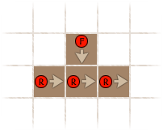
When the rogue moves out past the fighter, she provokes an attack of opportunity. Because the fighter is in her flank area, he gets a +2 bonus on the attack roll. |
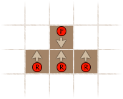
The rogue can move sideways past the fighter without facing the direction she�s moving bu it costs her two squares of movement to enter each square. The fighter still gets an attack of opportunity, but he doesn�t get the +2 bonus because he�s standing in the rogue�s front area. |
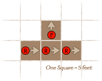
If the rogue moves around the back of the fighter, he can still make an attack of opportunity, but at a -10 penalty because the rogue is in the fighter�s rear area. The fighter also gets a +2 bonus because he�s in the rogue�s flank area when he attacks. |
FACING AND ATTACKING
In general, a character can attack into any square in his front area without penalty. This means that a character making a full attack should consider carefully when he takes his free action to change his facing. For example, if 6th-level Kroh is beset by a bugbear in his front area and a goblin in his rear area, he can attack the bugbear, take his free action to change facing towards the goblin, then attack the goblin. But he can�t then change his facing again. He�s stuck with his back to the bugbear, which is in his rear area.Characters who don�t want to change their facing to point toward a foe can attack into their flank areas at a -5 penalty and into their rear areas at a -10 penalty.
Characters can make ranged attacks into any square beyond their front area without penalty, as shown in the accompanying diagram. The penalties for making ranged attacks into flank and rear areas are the same as for melee combat.
Opponent Facing
Not only does your facing matter when you�re attacking, but the facing of your opponent does as well. If you�re attacking from a foe�s flank area (or the squares beyond it, if you have a reach or ranged weapon), you get a +2 bonus on the attack roll. You don�t need anyone opposite you on the other side of your foe. If you�re attacking from a foe�s rear area (or the squares beyond it), you get a +4 bonus on the attack roll.Sneak Attacks
A rogue can strike for sneak attack damage whenever her foe is flat-footed or whenever she�s attacking with a melee weapon from the foe�s rear area. She doesn�t need anyone directly opposite her to get the extra damage. The standard rules for creatures� immunity to sneak attack still apply. For example, a shambling mound has a rear area, but it�s immune to sneak attack damage because it�s a plant. Conversely, a phasm doesn�t have a front or rear, but you can still deal extra sneak attack damage if you catch it flat-footed.
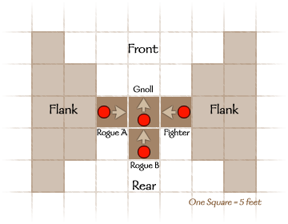
Rogue A doesn�t get
to make sneak attacks against the gnoll, despite the presence of the
fighter on the other side of the foe. But both the fighter and rogue A get
a +2 bonus on their attacks because they�re standing in the gnoll�s flank
area.
Rogue B may make sneak attacks against the gnoll as long as she�s attacking from one of the gnoll�s rear squares. If the gnoll turns to face Rogue B, she�ll have to move if she wants to make sneak attacks.
FACING AND PERCEPTION
It�s much easier to see what�s going on in your front area, and much easier to sneak around behind someone�s back.Spot Checks: Characters take a -5 penalty on Spot checks to perceive things in their flank area (or beyond) and a -10 penalty on Spot checks in their rear area (or beyond). The Combat Awareness feat eliminates this penalty. Faceless creatures (see below) and creatures with all-around vision ability don�t take this penalty.
Readied Actions: You can�t ready an action to respond to a trigger that occurs in your rear area if you have to see it happen (such as a doorknob turning). But you can ready an action for a sound-based trigger (such as the click of latch opening).
OTHER CONSIDERATIONS
The facing variant requires several other rule changes.Faceless Creatures
Some creatures have no real facing because they can move, attack, and perceive foes equally well in every direction. All elementals and oozes are faceless. Also, the following monsters are faceless: lantern archon, assassin vine, chaos beast, darkmantle, violet fungus, gibbering mouther, mimic, phasm, will-o�-wisp, xorn, and octopus (including giant octopus).Faceless creatures can move or attack into any adjacent square, and they can�t be flanked or attacked from the rear because they don�t have flanks or rears.
Tiny and Smaller Creatures
Tiny and smaller creatures don�t have facing. They can move or attack in any direction and are otherwise treated as faceless.Feats and Class Features
Some feats and class features provide an additional facing-related benefit to characters who have them. Also, the Combat Awareness feat affects a character�s awareness to his flanks and rear.Cleave and Great Cleave: The extra attacks granted by these feats can be made into flank areas without penalty, as well as into front areas.
Combat Reflexes: Characters with this feat can make attacks of opportunity into their flank areas without penalty.
Improved Uncanny Dodge: No attacker gets the +2 bonus for attacking into your flank or the +4 bonus from attack from behind you. Only a rogue four levels higher than you can deal sneak attack damage by attacking from a rear square.
Mounted Combat: Characters with this feat can attack into their steeds� flank areas without penalty while mounted.
Whirlwind attack: Characters with this feat can attack into any area without penalty.
Spellcasting
Spells and spell-like abilities that have areas such as lines and cones emerge from any grid intersection between the spellcaster�s space and his front area. A spellcaster can�t target anything in his rear area with a spell.Flank Attacks
Some monsters have attacks and abilities that reach flank squares as well as front squares. These creatures take no penalty for making these attacks into flank squares.| Devil, Pit Fiend: | Wings. |
|---|---|
| Dragon: | Wings. |
| Howler: | Quills. |
| Hydra: | Bites. |
| Kraken: | Tentacles. |
| Otyugh: | Tentacles. |
| Roper: | Strands. |
| Squid, Giant: | Tentacles. |
| Scorpion, Monstrous: | Sting. |
Rear Attacks
Some monsters have attacks and abilities that emerge from or attack into rear squares, not front squares. These creatures take no penalty for making these attacks into rear squares.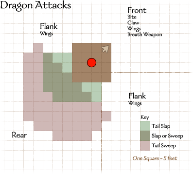
| Aranea: | Web. |
|---|---|
| Arrowhawk: | Electricity ray. |
| Cloaker: | Tail slap. |
| Demon, Bebilith: | Web. |
| Demon, Marilith: | Tail slap. |
| Devil, Pit Fiend: | Tail slap. |
| Dragon (any): | Tail slap or tail sweep (see the Dragon Attacks diagram). |
| Formian (any): | Sting. |
| Lillend: | Tail slap. |
| Manticore: | Spikes. |
| Naga, Dark: | Sting. |
| Rast: | Tail slap, tail touch. |
| Salamander: | Tail slap. |
| Tarrasque: | Tail slap. |
| Wyvern: | Sting. |
| Crocodile: | Tail slap. |
| Whale, Baleen: | Tail slap. |
| Whale, Chacalot: | Tail slap. |
| Bee, Giant: | Sting. |
| Wasp, Giant: | Sting. |
Shields (Optional)
If you�re particularly keen on facing, you can add another layer of realism by modeling how shields only protect against attacks from some directions. This "variant to a variant" system introduces a shieldless AC for a character who is attacked from a direction where he can�t interpose the shield between himself and the threat. Shieldless AC is easy to figure: Just subtract the AC bonus the shield provides (including its enhancement bonus if it�s a magic shield) from the character�s normal AC. 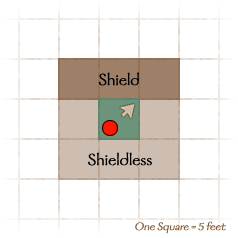 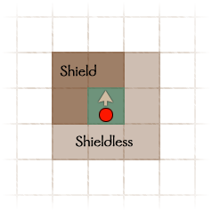A character holding a shield must indicate whether he�s wielding it to the left or right. The shield only adds to the character�s AC against attacks coming from his front area and the flank area on the shield�s side, plus any squares that lie beyond those areas.
The shield spell provides a bonus to AC against attacks from the front area only.
Combat Awareness [General]
You are so perceptive that you practically have eyes in the back of your head.Benefit: You take no -5 penalty on Spot checks to notice things in or beyond your flank areas. The penalty to notice things in or beyond your rear area is -5.
Normal: The penalty on Spot checks in or beyond your flank areas is -5; on Spot checks in your rear area, it�s -10.
Special: A fighter may select Combat Awareness as one of his fighter bonus feats.
HEX GRID
The primary advantage of this variant is that it eliminates the "every other square counts double" rule for diagonal movement, because it eliminates diagonal movement. Characters simply move from hex to adjacent hex, changing direction as they like. To determine the distance between two hexagons, just count hexes by the shorter path (in most cases, there will be a number of equally short paths).
Using a hex-based grid changes relatively little about the game, but poses a mapping dilemma for the GM. Most buildings and dungeons are based on 90-degree and 45-degree corners, so superimposing a hex-based grid on a structure leaves the GM with many partial hexagons, not all of which are big enough for a Medium creature. Use this variant only if you�re comfortable adjucating these partial spaces on the fly.
Depending on their size, creatures take up one or more hexagons on the grid, as shown in the accompanying diagram.
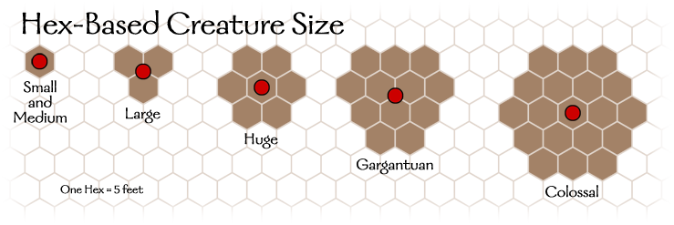Spell areas change to accomodate the hex grid; refer to the diagram below.
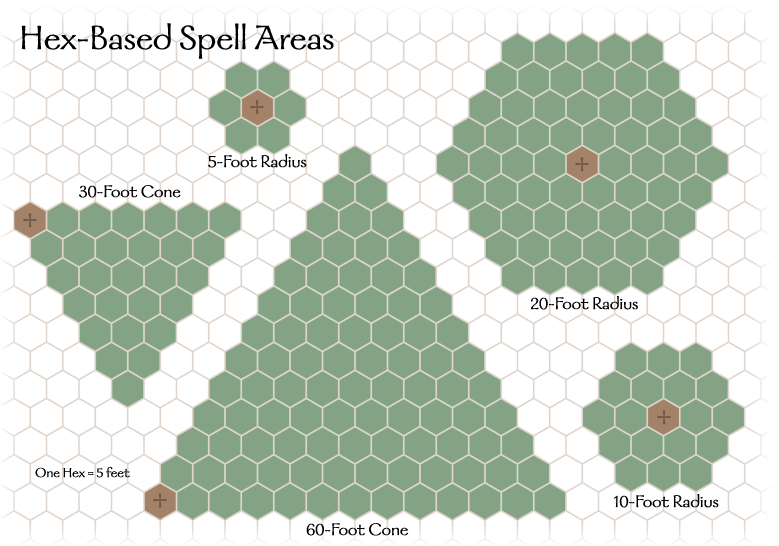HEXES AND FACING
The hex-grid variant works well in conjunction with the facing variant, giving your d20 game more of the feel of a tactical skirmish wargame. If this suits your gaming group, use the diagram below to determine front, flank, and rear areas according to the facing rules.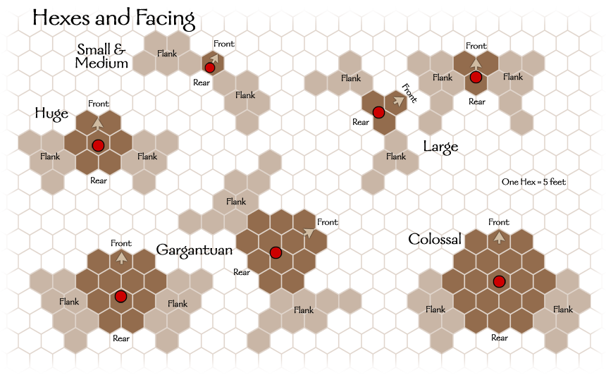